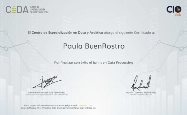

Máster en
Data Science

En el máster en Data Science adquirirás las competencias necesarias para conseguir un perfil profesional en big data y data science y enfrentar desafíos reales en la actividad laboral, tomando decisiones informadas basadas en análisis de datos y visualización de datos. Nuestra metodología de las 4AS, con un enfoque "learning by doing", te permitirá aplicar directamente tus conocimientos en proyectos prácticos y desarrollar habilidades en machine learning, inteligencia artificial y bases de datos. Durante el máster, trabajarás con volúmenes de datos significativos, preparándote para destacar en empresas del sector. Como profesional data scientist, estarás listo para aprender a emplear tus conocimientos independientemente del software que utilices en tu desempeño profesional. En CEDA, primamos la adquisición de competencias y el razonamiento para trabajar con efectividad y poder aplicar lo aprendido en diferentes contextos. El objetivo es dotar al alumnado de independencia y seguridad para enfrentar problemas reales y resolverlos con soltura y profesionalidad.
Descarga el programa del Máster en data science
 Online
Online
 Becas y financiación
Becas y financiación
 Bolsa de empleo
Bolsa de empleo
 Formación europea
Formación europea
 Asesoría onlive
Asesoría onlive
 CIO CLUB
CIO CLUB
Este Máster en Data Science se enfoca en los siguientes objetivos:
Tras finalizar el Máster en Data Science serás capaz de:
Este Máster en Data Science es ideal para:
CEDA otorga un título propio con reconocimiento de CIO CLUB y smart contract al alumnado que ha superado con éxito la formación y ha cumplido con el plan de estudios establecido.

Fórmate con casos prácticos de la mano de expertos de CIO CLUB
MATRICULARME
METODOLOGÍA DE LAS 4AS
Aplicable
Formación práctica y destinada a emplearse en el ámbito laboral.
Adaptable
Nos ajustamos a tus circunstancias y objetivos.
Activa
Aprende el temario sin aburrirte, adquiere conocimiento de forma dinámica y resolutiva
Avanzada
Nos servimos de los últimos avances tecnológicos y de las novedades del entorno digital.

¿Por qué estudiar un máster en Data Science?
Estudiar un máster en Data Science te brinda la oportunidad de adquirir habilidades altamente demandadas en el mercado laboral actual y destacar tu perfil profesional. Con la creciente importancia del análisis de datos en diversas industrias, este máster te preparará para convertirte en un profesional versátil y altamente capacitado en la interpretación y toma de decisiones basadas en datos. Podrás dominar técnicas avanzadas de análisis, machine learning e inteligencia artificial, lo que te permitirá resolver problemas complejos y aportar soluciones innovadoras en empresas y organizaciones

¿Cómo saber si estás preparado para cursar un máster en Data Science?
Para determinar si estás preparado para cursar un máster en Data Science, considera tus habilidades y conocimientos en matemáticas, programación y análisis de datos. Asegúrate de tener una base en estadísticas, álgebra lineal y cálculo, así como experiencia en programación en lenguajes como Python o R. Además, familiarízate con herramientas y técnicas de análisis de datos, como machine learning y visualización de datos. Si sientes que tienes una base adecuada en estas áreas y estás dispuesto a comprometerte con el rigor del máster, podrás realizar con garantías el programa. No es necesario ser un experto, pero es importante tener una buena base y disposición para aprender y enfrentar desafíos en el campo de Data Science.
¿Tienes alguna duda?
¡Déjanos tu correo electrónico y nuestro equipo asesor se pondrá en contacto contigo lo antes posible. También puedes contactar a través de WhatsApp para resolver cualquier cuestión.